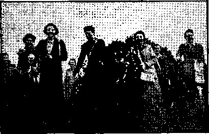
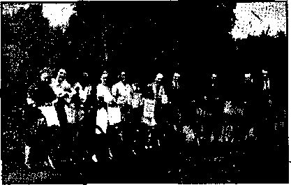
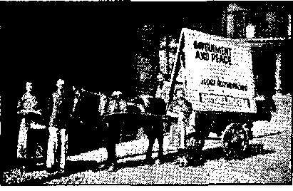
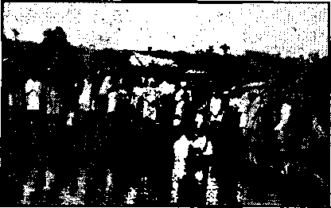

Contents
Notanda
The “New Order” in Europe (Part 2)
The New Government
“Say to the Prisoners, Go Forth”
Counsel by J. F. Rutherford
Connecticut Solons Would Fine the Savior $500 1!)
British Comment.
Published every other Wednesday by WATCHTOWER BIBLE AND TRACT SOCIETY, INC.
117 Adams St.. Brooklyn, N. Y., II. S. A.
Editor Clayton J. Woodworth
Business Manager Nathan II. Knorr
Five Cents a Copy
$1 a year in the United States
$1.25 to Canada and :rll other countries
NOTICE TO SUBSCRIBERS
Remittances: For your mvn Kaffty, remit by postal or express money order. When coin or currency Is lost in the ordinary mails, there Is u<> redress. Remittances from countries other than those named below may be made to the Brooklyn office, but only by International postal money order.
Receipt of a new nr renewal subscription will bo acknowledged only when requested. Notice of Expiration is sent with the journal one month before subscription expires. Please renew promptly to avoid loss of copies. Send change of address direct to us rather than to thn post office. Your r<-quest should r« ach us at least two weeks before the da to of issue with which it. is to take effect. Send your old as well as the new address. Copies will not be forwarded by the post office to your new address unlcs# extra postage is provided by you.
Published also in Afrikaans, Bohemian. Danish, Dutch. Finnish, Fnncn. Gcritum, Greek. 11unuarian. Japanese, Norwegian, Bolish, Portuguese, Spanish, Swedish, Ukrainian; also special Australian edition in English.
OFFICES FOR OTHER COUNTRIES
England 31 (’raven Terrace, T.ondon. W. 2
Canada 40 Irwin Avenue, Toronto 5, Ontario
Australia 7 Beresford Road, Strnthflcld. N.S.W. South Africa 623 Bo/ton House, Capo Town
Entered as second-class matter at Brooklyn, N. Y., under the Act of March 3, 1879.
Masses for Hitler
♦ Under date of March 5, 1941, a physician in the state of Washington wrote the following letter:
Wc had a patient in today who was a former Catholic. Recently her parents died and were buried from tile Catholic church. Said patient went to the priest, to pay for the bail exacted for the so-called ‘‘mass''. The priest, was not in; so sho saw the housekeeper, who was a cousin of the priest. In the course of the conversation the subject of the war came up, with a discussion of Hitler. The cousin of the priest stated that mass is said every morning all over the U.S. in all Catholic churches for Hitler. On being asked why this was so, she replied that Hitler was formerly a Catholic and that they were anxious to get him back as a communicant in order to influence him to case upon his atrocities somewhat. The patient, asked her if it was not more that if Hitler is victorious he will divide his power with the pope. Her reply was that that was partly the reason. She told the patient that the Catholics all expect Hitler Io win, and so hope; the reason given, that England and the United States arc Protestant nations and when Hitler comes into control of them that would stop the birth control which is so odious to Catholics. She further staled that when England is conquered, Hitler is coming over here ami take over this country, and that will give the Catholics control of the situation.
On March 20, 1941, three of Jehovah's witnesses in the anthracite region of Pennsylvania remarked at each Catholic home, *'T understand that masses are now being said every day for Hitler.’’ The usual reply was, ‘‘ Yes, but I don't believe it will do him any good.’’ In no ease was there a denial that the masses are said.
This amounts to a full confirmation of the news from Washington, and is big news. Every reader of this magazine knows the Hierarchy wants Hitler to win.
CONSOLATION
“And in His name shall the nations hope.”—Matthew 12:21, A. R.V.
Volume XXII Brooklyn, N. Y., Wednesday, April 16, 1941 Number 5ft3
The “New Order” in Europe (in Four parts-pan 2)
IT IS a big job trying to blockade a whole continent, and there are holes in the blockade, all along the eastern border, and to some extent on the south. It is hard to get the facts, but Germany is now believed to be suffering from insufficient petroleum products, rubber, leather, textiles, soap, ferro-alloys, nonferrous metals, fats, oil seeds and fodder.
There has been a heavy increase in accidents and occupational diseases.
Owners of buildings in Munich were ordered to remove all copper parts, including roofs, doors, gutters and handles. Many firms closed because of lack of rubber, lead, copper and soldering materials. Large numbers of retail shops are closed. Many textile factories have nothing to do. The claim is made for the new yarn made from hop fibers that it is three times as strong as cotton, more resistant than hemp, and does not wrinkle.
The substitute for soap is. strong and corrosive and quickly destroys the fragile fabrics made of wood pulp, the only kind of clothing now to be had* The demand for the wood pulp has taken about .1.0 percent of the forests. Every German may have 100 points’ worth of clothing annually. If less than 14 a child’s card is issued. If the boy is large for his age he mu^t get a special purchase coupon or no suit. Not even a spool of thread may be obtained without a special‘permit.
It is the duty'of the "Back-Alley Brigade” to examine all dustbins and rubbish receptacles in their allotted areas, so that anyone caught throwing away anything of value may be punished. In one instance a member of the squad re
APRIL IS, 1941 ported two tenement-dwellers for getting rid of potato peelings. That night the policewoman was found beaten unconscious in the street in a black-out.
It is reported that there are no preserved fruits or vegetables, canned goods, spices, onions, lemons or oranges. Coal is rationed so closely that the pieces are wrapped separately each in newspaper, and fed one at a time to a single flame in the smallest room.
Factory-inade jam tastes more of the factory than it does of the jam. If a person eats a piece of cake it is charged against his bread card. The lard allowance was cut to 6£ ounces a month. Since January 1, 1941, dogs, foxes, bears, and beavers are legalized for human food and all the 3,000,000 dogs in the country are to be slain for food except those needed for the blind, the Red Cross and the army. Dogs have'been eaten in Germany since 191.2, when 10,000 were thus; used.
Educated to Murder
Wrm E. Dodd, in his diary as American ambassador to Germany, date of December 14,1935, gaid, "All military and naval experts here report the utmost speed in German rearmament. They are building the greatest military machine in the world.”
The 6,000,000 force under arms is 65-percent mechanized. It has the entire equipment of the French army, the Maginot line and the British equipment left at Dunkirk. It has 2,000,000 French prisoner-slaves and other millions from Poland and Italy and many other lands working top speed.
The “'new order” is down to a strictly murder bdsis. The minister of Education made an oration exalting the murder of one’s fellows as the highest aim to which man can attain. The youth were urged to look forward to driving a tank, flying a bombing plane or commanding a U-boat, i All youth must now become members of * the Hitler Youth, and if they fail to do so their parents are punished. Ail of Jehovah’s witnesses, including their children, are involved, and many homes have been sundered, where the state has claimed the children for itself. Boys 10 to 14 wear knives, and 14 to 18, daggers, as signs of “honor”. Exclusion from a youth organization after 14 means virtual civil and social death—ostracism.
For four centuries the Roman Hierarchy taught that no Catholic could be saved who denied that non-Catholics should be murdered. Pius V approved a plot to murder Queen Elizabeth and stated he was willing to spare a culprit guilty of 100 murders rather than to spare one “heretic”. Gregory XIII commended the king of France for the Massacre of St. Bartholomew. And in the United States of America, and right now, in black and white, the famous Catholic theologian Dr. John A. Ryan wants to know, in almost so many words, when Catholics have grabbed the country, what protection any who object or resist or teach differently would then have against a Catholic state.
Persecution of thinkers, and murder of them, is essential to the “new order”. The Nazis destroyed the University of Warsaw, placed the professors of the University of Cracow in a concentration camp, and closed the University of Prague and half the universities of Germany, and they visited ruin and destruction on the University of Madrid and the University of London. They also murdered Josef Weinhauer, the courageous boxer and electrical engineer, who traveled about Germany for a year and a half broadcasting the truth about the infamies he saw. Anticipating correctly that his apprehension would mean his death, he virtually finished the three men who arrested him. No honest man can fail to admire the courage of this man who was willing to die in the cause of liberty, for what he believed to be right.
Germany must have received serious damage from the more than 2,000 air raids over Hitler-land. For the most part these damages are denied, but pathetic pictures were published of charming little folks playing in the public garden of Freiburg, in Breisgau, and the same little folks stretched out dead, with parts of their heads blown away by bombs from French planes. They look just as bad in Germany as they do in Spain.
550,000 German children have been evacuated from the cities. Up to the age of 3 they go with their mothers; from 3 to IQ they go in private families; from 10 to 14 they are in the Hitler Youth organizations.
The war catacombs under Berlin shelter 2,500,000 persons, have power plants, artesian wells, radio apparatus, gas' masks, secret exits in woodlands far removed, operating rooms, police stations, food warehouses, access to the subways, and were built secretly in anticipation of just what the “new order” now has on hand. Jews are given a place by themselves in the corridor and no German member of the community may speak to them.
Like everything else in Germany, the breeding^ of cannon fodder is under state supervision. Pierre van Paassen explains as follows: “An efficient visiting service of German women to the front and to Nazi-occupied areas has been carried on since the beginning of hostilities. Carloads of eager patriotic girls and women are dispatched to the warriors of the fatherland, who are admonished to spurn any contact with foreign women.” Breeders of livestock usually route the males. The “new order” has not gotten to that— not yet. Spokesmen for the Reich have stated that hereafter only Germans may live within its borders; and, from the way things are going, it is certain nobody else would wish to do so.
The Religious Racket
The religious racket receives the same minute attention as the breeding arrangements. The clergy still impart “religious instruction” in the public schools. They want control of the children so that they can collect from them throughout life, without themselves being expected to do any useful work. Hitler’s additions to the Reich changed Germany from a Protestant to a Catholic majority. It is calculated that there are now 48,000,000 Catholics and 45,000,000 Protestants. Papa has pre-eminence in all things.
Up to now Germany has been contributing 70,000,000 marks to the salaries and expenses of the Protestant churches and only 55,000,000 marks to the Catholic churches, but these proportions can all be changed. There are but 16,000 Protestant clergymen, while the 11,000 Catholic parishes average four priests apiece.
The Oberammergau racket is off for the duration of the war. The man that was booked to play the part of Christ in the play for 1940 is a soldier in the German army. This so-called "Passion Play” was never anything but a money-grabbing racket. Here and there an honest Catholic admits in the publications of the church that there is no truth in the widespread reports that the Roman Catholic church in Germany is being persecuted. Such reports of the real facts in the case appeared in the London Catholic Herald of December 27, 1940, and the' London Universe (Catholic) of the same date. It is true that priests must serve one month as common soldiers before they may have the safe and soft and honorary job of chaplain, and it is also true that after a night of air raids the church'bells may not be rung until after 1: 00 p.m., but no sensible person can class these as persecutions. The bulk of Catholic priests throughout the entire world hope in their hearts that their f ellow-Catholic Adolf Hitler will subjugate the entire earth in
APRIL '6, 1941...... ■ the interests of what the Catholic bishop Franziskas Rarkowski designates "our good and just cause”. It is hard to figure out when the Devil ever had a worse one.
Petain and the Garrote
Rooters for the "new order” do things no decent, self-respecting man would countenance. Thus the much-belauded Marshal Petain, dictator of France, handed over the former president of the Catalonian republic to the much-belauded Franco. This man was then strangled by the garrote. Had he wanted to be decent, Franco could have had him shot, as he did the members of the Spanish Republic’s cabinet, but he got more religious satisfaction out of having him slowly strangled. Petain is a personal friend of Franco. Both are ideal "new order” statesmen. Conditions in Spain are the worst in 62 years. Franco agreed to admit a shipment of 110,000 Bibles, but seized them and ground them up.
If, as and when the “new order” takes over Gibraltar, it will also take over Portugal, conditions in which were mentioned in Part 1 of this article. Catholic papers swell with pride over Salazar. Thus the London Catholic Times, May 10, 1940, had a two-column story about this monster, entitled “Catholic ‘Dictator’ Achieves Two More Triumphs”, just about the time they thought the "new order” was going to take over the whole earth. The deal did not go across, but it is confidently predicted that at the right time Portugal will surrender by telephone. Also, and this is interesting, there are 500 officials in the German embassy and consulates, and in a German clubhouse in Portugal there were found almost 1,000 Portuguese army and navy uniforms, the majority of them officers. Nothing like being ready! ,
The “New Order” in Czechoslovakia
Some of Britain’s big financiers actually encouraged the Nazi invasion of Czechoslovakia, so that they could get Czech factories; and they also loaned
5
money to Hitler after Munich; so the land of John Huss had about the same kind of deal as did Spain. Big Business is strong for showing its sympathies for the “new order”.
One of the commandments of the "new order” is, "Thou shalt steal,” and it is ^obeyed very well by the Nazis in Czechoslovakia. When the Germans feel that they want Czechoslovakian homes, they just come across the line and take them. The Czech owners are dispossessed and cast out without redress. German immigrants from Bessarabia (eastern Rumania, now under control of Russia) were moved into 29 communes in the Elbe districts and the Czechs had to leave.
To quell ideas of liberty the Nazis demolished the "tomb of the unknown soldier” in the Old Town Hall of historic Prague. Also, all the many bronze statues and plaques of this historic place were seized and melted down for war purposes. As to Slovakia itself, a wireless to the New York Times quotes Premier Tuka as saying that henceforth the governmental system will be a combination of German Nazism and Roman Catholicism. He thus defines the "new order”. That is exactly what it is.
It is not lawful to print all the details of sadism and sex pathology that go to make up the “new order”. But here is one paragraph from the leaflet Can Happen Here”, published by the Czechoslovak National Council of America, 4047-4049 West 26th street, Chicago, Illinois, U.S.A. It is telling of what took place November 17,1939, when 150 Czech students were murdered. Read it:
Many girls, dragged to large open spaces surrounded by tanks, were raped before the eyes of the fettered students,-some by several men, one after another. The German soldiers burned the breasts of their victims with cigarettes. Other girls were*compelled to drink the contents of spittoons filled with urine and became ill with disgust. The men students were powerless spectators of these frightful scenes.
Poland's Baptism of Fire
♦ The Government of Poland was blown off the map in 18 days. The scene was filmed and shown in all its cruel horrors in Norway and Italy, and will be shown wherever the "new order” wants to make an impression of its resistless might. Dorothy Thompson said of the showing of this film, “There was almost no applause. Onlookers sat pale and quiet. But the film created precisely the effect intended. It conveyed the idea, "This is what happens to anyone who opposes us.”’
The German Library of Information, center of propaganda in the Western world, New York, 1940, published a 260-page book entitled "Polish Acts of Atrocity Against the German Minority in Poland”. Details are given of 110 instances, all of them too horrible to be summarized, and there is no reasonable doubt that the charges are true. It is impossible to read them without profound conviction that the wise man stated it just right when he wrote, "concerning the estate of the sons of men, that God might manifest them, and that they might see that they themselves are beasts.”—Ecclesiastes 3:18.
While the book makes a feeble attempt to show that the Poles were always bloodthirsty against-the Germans, yet the 110 instances of unspeakable atrocities seem all to have occurred alter the German invasion of Poland September 1, 1939. .
This does not justify the atrocities, but it measurably7 explains them. In the presence of an international Terror, such as the "new order”, men lose their poise and reason, and act no better than frightened wild beasfs. Indeed, it is difficult to believe that any7 wild beasts would do some of the devilish things listed, and of which details are given. Many7 of the charges are substantiated by exhibits and affidavits.
There are millions of Poles and Germans in America, or Americans of Polish or German descent, and here they have consolation
no trouble in living amicably side by side. The boys and girls attend school together, grow up and marry, and their children become some of America’s finest citizens. Why can they not do the same in Europe? The answer is that the Roman Catholic Hierarchy is now using Hitler and other tools of the Hierarchy to seize all the governments of the earth, with the result that the entire world at this moment is in a panic of fear, and under such circumstances the demons can and do use men to express all the devilishness possible.
Jehovah’s people have inside information on this subject. Before the German invasion of Poland they had an office at Lodz from which literature descriptive of God’s Kingdom wTas going out all over the country, and bringing light and comfort to many weary hearts. At the same moment, and for many years prior thereto (all during the reign of. Hitler the Mad), they were not permitted to circulate the same message in Germany, and all who attempted to do so were thrown into prisons and concentration camps, where they suffered the same kind of inhumanity as that of which the writers of this book complain. Moreover, the moment that the Germans seized Poland the work of proclaiming the Kingdom message was stopped forthwith.
If the German people, all of them, and the Polish people, all of them, had paid heed to the Kingdom message when they first heard it, and had stopped paying heed to the blasphemies of the religionists, both countries would be at peace today and the world would' not now be mad with the great Terror ’which raises its awful head in the lands of what was once and fain would again be the “Holy Roman Empire”. But the nations of the earth, i.e., the peoples, gave scant heed to the message; and behold the result!
Ao Atrocities Excused
This magazine excuses no atrocities by anybody, but it justly accuses the Roman Catholic Hitler and his backers as
APRIL 16, 1841 responsible for conditions of horror in Poland that beggar description. The London Catholic Herald, November 29, 1940, admits 100,000 Poles (one-third of the city) were deported from Lwow, many of them on fifteen minutes’ notice. Many of these exiles were taken to the steppes of Siberia, and landed seventy miles from the nearest town, without habitations, by Hitler’s and Pacelli’s friend, Stalin.
. Robert Neville, in PM, tells that in Poland Poles must tip their hats to Germans, must give Germans the right of way, and must wait in stores until all Germans present have bought what they wanted and departed. All men and women betweeitlG and 47 must register for work in Germany. 1,700,000 Poles have been made labor slaves in Germany, 18,000 Polish schools have been closed. All libraries, museums, scientific institutions and schools have been stripped of their treasures and equipment. 85 percent of all Polish bank accounts have been confiscated. All foodstuffs and livestock have been registered and are delivered to the German authorities at their will. The Germans boldly claim, even over the radio, that the Poles and Czechs are- and must be servants of the , Germans for ever, It is the “new order”.
In stripping Poland and all other lands, ■wholesale stocks of everything are paid for in worthless scrip and then quietly shipped to Germany. A pathetic result is that when the pinch begins to be felt, the people, exhausted, helpless, and looking for a convenient scapegoat, ■ are inclined to believe what the Nazis tell them, and to blame anybody else than the Devil, the pope and Hitler, the true authors of their misfortunes, $2,-500,000,000 of Polish property was confiscated in a single year.
In the subjugation of Warsaw thousands were compelled to stand all day with their faces to a wall; all factories, shops, hotels, restaurants and estates were seized; great numbers of business and professional men were shot; all the
men in entire blocks were seized and carried off to Germany to do forced labor; all the valuables in their homes were seized. Whole villages were emptied of their inhabitants. The subjugation of Poland caused the death of 320,000 soldiers, 1,100,000 civilian adults, and 200,-*000 children. Subsequently 26,000 civilians were executed and 4,000,000 were deported from their homes in the Polish Corridor. Multiplication of Poles is hindered by the very simple process of preventing marriage, of young Polish people to each other, and taking many young Polish girls to Germany.
Crimes Against Poland
Crimes against Poland lifted by the Manchester Guardian (only a few selected) are the execution at Gdynia of twenty young Poles because of the accidental wounding of a policeman by a boy playing with a catapult; the seizure of the homes of 20,000,000 Poles; the birth of children in bitter winter weather in unheated cement barracks, where, for lack of warm water, they could be bathed only in tepid coffee; the deportation into Ger' many of attractive girls of 14 upward; the punishing of Germans for showing pity; the freezing to death of thirty children on a railway journey; striking people on the face with riding whips if heard speaking Polish. Such is the “new order”.
The United Press contains dispatches from Rome announcing the massacre at Chelm, Lubliniec and Koscian, Poland, of great numbers of children sick with mental diseases.- The German authorities decided it was not worth while sparing their lives, and so gave them morphine and had them shot. The number thus shot at Chelm was 428. This is more of the “new order”.
One of the oldest universities in Ku-rope is the Jagellonian University of Cracow. The professors were imprisoned in German concentration camps to break their spirit. Seventeen died from the ill-treatment, 104 were released after three months, but 50 were left behind. In an address to these prisoners the official statement was made by Dr. Frank: “By the will of the Fuehrer, you are to be a nation of peasants and workmen. We do not need a Polish educated class. The Reich has an abundance of educated men of her owm.”
The Jewish Examiner declares that in seven months after the invasion of Po- . land 400,000 Jews were driven from their homes, 300 synagogues were destroyed, hundreds of cemeteries were wrecked, and more than 7,000 Jewish girls were kidnaped and forced into Nazi soldiers’ brothels. 10,000 Jews were rounded up in Vienna in midwinter, robbed of all possessions, and shipped into Poland. Germany offers to sell these at $445 each and ship them to Portugal in cars with blackened windows, thence via boat. The rail charge in this ($245) is more than $200 more than American railroads would charge for the highest class coach service in the world. Hitler is.trying to blackmail this money out of relatives of these unfortunates.
The Germans built an eight-foot wall around 100 city blocks of Warsaw and ordered all Jews in the city to move into it. There are but 18 entrances into this huge ghetto. None may enter it or leave it without a pass. The same., thing was done at Radom. It is another feature of the “new order”.- In Hitler’s own paper, Vblkischer Beobachter, is predicted the complete elimination of Jews from the economic life of Europe in 1941.
The Women of Warsaw
The Committee of Polish American Women, 19-23 St. Marks Place, New York city, received and reprinted' an appeal from the Women of Warsaw from which a small portion appears herewith:
Our husbands, our brothers and fathers perished in mass murders which wiped out tens of thousands. They die slowly in dungeons or perish from starvation and eold in war prisoners’ camps. Gur sons, the future and pride of the nation, either perish like their fathers (as boys of 12 and 14 years of age were, by no consolation
means lacking among those who were shot) or are registered and taken away to alleged labor camps in Germany whence there is no return. Our daughters, our little girls, the dearest joy of our lives, are being apprehended on the streets or abducted from their homes under cover of night, imprisoned in company with prostitutes and deported to German brothels. And there are among us mothers who, no longer able to shed tears, ask God for one thing only: ‘‘that their daughters might die.” Our babes, those innocents who first saw the light of day in refugee shelters, in freight cars or prison cells, arc slowly dying in our arms (we no longer able to give them warmth) without even once having had a warm bath or sufficient food. Our homes, once cony firesides, stand empty, no longer sheltering anyone. Their walls ceased to be a protection, since every German has a right to enter at any time the abode of any Pole and take therefrom anything that might look worth while to him: ’ furniture, linens, and the last remnant of
supplies.
The Sozialistische Warte, publication of the illegal-Social Democratic party of Germany, tells of Gestapo agents bringing a group of Polish workers to a certain country town in the spring of 1940. The farmers moved among them choosing their laborers as one chooses cattle. In some instances one farmer chose a husband and another his wife. The Poles had no interpreters, but their evident distress moved some of the farmers deeply. However, the Gestapo would not allow them to listen to any appeals.
A Vanished Land •
The Nazis made a job of it when they wrecked Poland. The Polish minister without portfolio, General Joseph Haller, asserts that between 5,000,000 and 6,000,000 Poles were transferred from the western part of the country to the central part, which was systematically devastated beforehand. Absolutely all property of the unfortunate emigrees was confiscated and they were left in a ruined region where there is no commerce and no industry, under the rule of
APRIL 16, 1641 a puppet government which Germany was unable to find a Pole sufficiently treacherous to lead.
Familiar names have been changed so as to obliterate the old landmarks. The Polish railways are now called the “Eastern Railways”; the postal administration is called the “German Post in the East”; the-University of Cracow is called the “Institute for German Work in the East”; the Polish language is banned from official and from public use.
For a year the German government maintained over a portion of Poland a nominal Gouvernement General, which was supposed to mean that sometime a portion of Poland would be reconstituted as a nation, but subsequently the Ger-' mans declared that the Gouvernement General would be incorporated into the Reich, there to remain forevermore.
Polish prisoners of war were released but must remain in Germany, where they work for 57 percent of the wages paid to German farm hands who do the very same kind of work. The Poles are compelled to wear a large “P” on the right breast of every article of clotlpng, and Germans are forbidden to have social intercourse with them. Now they are not prisoners, but merely slaves.
The “New Order” in Denmark
+ The religionists and politicians of the “new order” believe that if you have a neighbor that is weak, the thing to do is to -take all that he has, at your own pleasure and convenience. This was the reason for seizing Denmark. There was no Catholic minority worth mentioning. Only 2 percent of the inhabitants of Denmark, Iceland, Norway, Sweden and Finland are Catholics, but to look after the 31,924 thus misled there are 1,830 priests, brothers and nuns. In other words, every group of 18 Catholic persons in those countries is carrying one member of the racket on its back. “And my people love to have it so: and what will ye do in the end thereof?”
Immediately after the seizure of Den-
9
mark 50 percent of the pigs were killed and 25 percent of the cattle. Lt became almost iihpossible to take a batji, because of heat rationing. For more than a year .private automobiles have been in storage. Foods, fuels and taxes are very high, and rising.
> The Nazi masters of the land forbade * the Jews to engage in banking or finance, and drove them out of the jewelry business. Mixed marriages of Jews and Gentiles were forbidden within a month after the country was seized.
Nazi police are on every corner. Community singing is prohibited. When the railway cars and engines go south they never return. No news of the war is per-• mitted to enter the country. In other words, the Danes are, in effect, slaVes.
The Seizure of Norway
In the history of the world there was never before such a perfectly co-ordinated piece of bedevilment as the seizure of Norway. The perfect operation of motorized and mechanized forces with infantry and air operations and lying and bluffing bespeak the master hand of Satan himself. It was impossible to use battleships within the areas patrolled by the air forces of the invading army.
But a price was paid. The Norse sank the cruiser Bluecher, its oil tanks sprang a leak, the oil took fire, and as the ship w7ent down all on her went into a sea of water covered by a sea of flame. Those rescued were blinded. But other troops landed and overran the country, to the intense disgust of the Norse. One old woman shot a German soldier in the seat with a package of carpet tacks, and all Norway applauded. However, the country has been stripped to the bone and the cruelties used in Poland were used there too. A youth saw a German soldier corpse in the street, reported it at the nearest police station, giving his name and address, and the next day ivas picked up and shot without a hearing.
Norway was conquered in three weeks. As soon as Oslo, Norway, had been seized 10
the representatives of the “new order” took control of the radio and in perfectly spoken Norwegian (learned when they were fresh-air guests) issued “official government statements” assuring the people that there had been no attack, and to disregard the mobilization calls which had been issued. On the seizure of Bergen, Norway, the same master liars, in faultless English, radioed the Norwegian defenders that they7 wmre British vessels bringing assistance against the German invaders. In addition to being demonized, both Hitler and Goebbels were Jesuit-trained and are admittedly the most audacious liars in history.
The “New Order” in Norway
The “new order”, i.e., the “order” of the Devil, the pope and Hitler, shovrs the same spirit in Norway that it does elsewhere. At Rena, Norway, Arthur Menken, news photographer, arrived in time to get pictures of German aviators flying low and destroying private homes in a helpless village in a country which had given them no cause of offense. Thbse that have the spirit of the Devil would far rather be feared and hated than to be loved and appreciated.
The Norwegian High Command issued a statement that it had witnessed German plundering of cities, tpwmships and houses, and attacks upon points of no military value; had seen women and children machine-gunned by German fliers; had seen detachments of Norwegian troops fooled into submission and then shot down without a chance of defense; had seen Norwegian peasants and prisoners used as a shield against Norwegian bullets; and had seen Norwegian ships used as transports for German soldiers, pvith the result that the Norwegian crews were killed by Norwegian bullets.
At Nordli, Norway7, on the Swedish border east of Namsos, a Nazi plane attacked a column of ambulance cars belonging to the British Quakers, and riddled them w’ith machine-gun bullets. The large red crosses on the roofs of the am-
CONSOLATION
balances were clearly visible in the sunlight when this-was done. The occupants of the cars, knowing that German planes had repeatedly attacked passenger ears and even farm houses, escaped by fleeing into the woods upon hearing the planes approaching. So says a Norwegian writer, Kaare- Haabeth, in the New York Times.
'God hath made of one blood all nations of earth’; but the Jews are henceforth to be excluded from Norway’s civil service, and Jewish stores in Norway must be marked as such. The town of Hamar was fined 100,000 kroner and an 8 p.m. curfew was put in effect. About 1,000,000 Norwegians are now living under a regime akin to that of the concentration camp, and a hatred of these confessors to the pope and his orderlies has been engendered that will last as long as they do. The entire Norwegian judicial system was wiped out by a mere stroke of a pen. The Nazi church commissioner, Prof. Ragnar Skanke, issued an order forbidding Protestant church leaders to work against the "new order” (using that very expression), and warned jfliem against most serious consequences if they disobey. The Lutheran bishops cannot figure it out why troopers of what they teach are the “higher powers” resort to systematic violence, why the police should be warned not to interfere with such violence, but to protect the wrongdoers, and why all the Supreme Court had to resign in protest of such conduct.
It is now illegal in Norway to pray for the king. All mail addressed to Vidkun Quisling, Hitler’s alter ego, must terminate with1'"IIeil Quisling” to be O.K. The Quislingists decided that the Nor* wegians might not wear buttonhole coins with the king’s head. The Norwegians changed the buttons to paper rings. The rings were declared seditious, whereupon they wore their bread cards; the king’s arms are printed on them. The instructions to treat political prisoners in a humane manner are withdrawn.
Forty thousand unemployed Norwe-APR1L 16, 1941 gians were drafted to work in Germany and have thus fallen into the ranks of the actual slaves of the “new order”. People disappear and nobody knows what becomes of them. This is all regular. Even the women disappear. In the “new order” there are no such things as manhood or womanhood, but there arekwhat* may be described as “pure Aryan beasts” instead. The Norwegian men have caused landslides and avalanches,* many of them at the same hour at night, to harass the Nazis, but the only effect of such sabotage is to cause more suffering to the innocent. Another useless and foolish act of sabotage was that as a German broadcast was going on in Oslo, the electric cables outside of the city were cut in several places, and for several hours neither radio nor electric lights nor electric railways could function. The effect of such acts is greater suffering for the slaves.
The Norwegian torpedo boat Sleipner, based on the Faroe islands, slips in and out of fjords and bays and ports, lays mines, captures smaller craft manned by German crews, and hides with a deftness no pursuer could emulate. ..
The murderers that have seized the country rendered an occupation bill of 40 percent of the national income of Norway, Norway managed to get its gold reserve, $132,000,000, across the sea into > Britain. Also it got 20,000 Norwegian sailors, none better on earth, now engaged in bringing essential supplies to Britain. Some of these were so eager to get away from the Germans that they crossed the stormy North Sea, 500 miles, in rowboats in order to enter British Government employment. One of these, f thus escaped, reports that in Oslo there are no eggs, milk is scarce, and meat is almost unobtainable. On account of gasoline shortage there is no vehicle transportation and almost no fishing. Good flour is not to be had, and there is an acute shortage of feed for poultry and cattle. Butter, sugar, coffee and clothing are rationed, and the prices for everything have doubled.

Pomona Police Hero
♦ The police* department of Pomona, California, pays wages to a fat and very brave officer who totes two huge revolvers and carries a night-stick almost two feet long. This oversupply of war material guarantees that no one will be so indiscreet as to protrude his tongue in the presence of this flat-foot except maybe to lick an ice-cream cone. One of The Theocracy's roving photographic eyes caught this over zealous minion of the law while in action against Jehovah’s magazine publishers. The outcome of the incident left one Irish policeman (guess his church) badly chagrined, gave the Pomona police department a clean bill of health, and resulted in another victory for Jehovah.
A loyal son of Rome accosted one of Jehovah’s witnesses on a busy downtown corner in Pomona, asked, “Who gave you permission to distribute that stuff on this street?” and left with the remark that the police would soon put a stop to that. Shortly our aforementioned heroic pavement pounder, who had previously attempted to interfere with the witnesses, appeared on the scene.
Cop: Who gave you permission to do this work?
Jw: I asked for no permission. Almighty God has commanded me to preach this message of God’s Kingdom and I am using this method of doing so.
Cop: Are you an ordained minister? Jw: Yes.
Cop: Can you conduct marriage ceremonies?
Jw: What preacher married Adam and Eve in the garden of Eden ? (Broad grins on the faces of some goodwill people in a ear parked at the curb. They had just obtained magazines.)
Cop: We’re going to take all of you to the station. How many of you ar6 there in town? Ten?
Jw: Oh, lots more than that.
Cop: (Nonplussed) Oh, there are, huh? Well, you’re coming to the station with me, anyway.
Jw: Am I under arrest?
Cop: No.
Jw: Then I can’t leave my post. The Lord’s work is too important.
Cop: (Exasperated) Give me those magazines! He snatches the magazines from the witness’ hands and the Jw promptly grabs them back. Oblivious to the possibility that tomorrow’s headlines might read, “Pomona Cop Jugged as Magazine Snatcher,” he snatches them away again, only to have them grabbed back pronto. Finally our hero makes his getaway with one Consolation, and heads - in the direction of the police station.
After a few minutes the chief drives up to another witness on the opposite corner and questions him.about the work. Apparently the interview is satisfactory; so, after the chief leaves, Papa Pacelli’s t_wo-gun angel trots right back sheepish-like and gives back the magazine he hooked. Was his face red!
The chief is to be commended for his stand for righteousness and knowledge of Constitutional law.—F. H. Eaton.-
♦ A preacher associated with a very wide Methodist circuit in North Kent was requested by one of his flock to explain certain facts that a Jehovah’s witness had put to him. Several of the young men of the preacher’s flock also put pertinent questions arising out of contact with Jehovah’s witnesses. The preacher took his troubles to the lord of his diocese, who dismissed everything with a sweep of his hand, concluding with the peroration that these witnesses were only booksellers. The preacher was not satisfied, the young men of the flock were
not satisfied, and the result was that the preacher and one other should visit these .Jehovah’s witnesses, and accordingly they arrived on Sunday at ... at local Kingdom Hall.
The study of Part 6 of Zephaniah’s prophecy was in progress, and 1 cannot do better than pass on the comments of the two religionists, who said: “We are amazed at (i) your lack of reverence and your freedom of speech and action; (2) the spirit of happiness and contentment pervading the assembly; (3) your unequivocal stand against religion; (4) your amazing use of the Bible to prove all things.”
On the following Tuesday, in company , with the servant, the preacher was taken to the Salvation study, and the disclosures at that study showed the sincerity of this prisoner and he could not withhold his grief. He said: “I thought T knewr the Bible, but you make me feel a novice.”
On the followtfig Friday 1 again visited him. It thrilled my heart to answer his many questions on the Kingdom and to
APRIL 16, 1941 leave a set. of 12 books with him. That visit brought about his decision to witness for The Theocracy, and in this his ■wife also joined. To dwmll here on his distress of mind as he realized all the privileges he had lost, and the paucity of his knowledge, is but to reveal the anguish of a sincere and honest heart. This modern Zaccheus who ’'came to see Jesus’ is now supping with Him. The preacher is resigning tonight and declaring that he is taking his stand wnth Jehovah’s witnesses and witnessing from house to house. He declares eight other young men art; coming with him, for apparently they have waited for his decision. The congregations over which he has presided are now torn in twain.
The prisons are opening and those that are coming forth find the sun brilliant to their eyes, for it is nigh “noonday”.— F. L. Brown, London.
♦ The apostles after Jesus’ death broke the bread of life “from house to house”
(Acts 2:46), “and daily in the temple, and in every house, they eeased not to teach and preach Jesus Christ.” (Acts 2:42) This lesson was well learned and . practiced by Paul even before he became a Christian (Acts 8:3), and at Ephesus he was glad to be able to look back over his course and thank God that he had * taught the people “publicly and from house to house”. This house-to-housc work is plainly implied in Jesus’ sending out the seventy “two and two before his face into every city and place, whither he himself would come”. (Luke 10:1) . Certainly the Son of God would not send seventy men to camp out permanently at one house.
At Leicester, England, one of Jehovah’s witnesses was before the Tribunal' and a member of that body sought to entrap him as follows : “You say you are a full-time minister. Do you go from house to house?” “Yes.” “Don’t you know that Christ said, ‘Go not from house to house’?” “Xo, T do not.” “You are a line minister! you do not even know the Bible.” “And do you still intend to go from house to house in the face of that Scripture’?” “Certainly, I intend to continue.” “Then you are a humbug.” “You are registered for non combatant service in His Majesty’s forces.”
Of course, the scripture quoted (Luke IO: 7) in no way lessens the necessity of preaching the Kingdom message from house to house, but is an exhortation to
Theocracy publishers just outside London, England
14
A dozen London pioneers
workers in the Master’s vineyard who have found a place to remain over night, yvhere they are welcome, to “in the same bouse remain, eating and drinking such things as they give: for the labourer is worthy of his hire. Go not from house to house”. This misuse of the Scriptures was entirely unfair. But the newspapers, as always, applauded the injustice. Probably, in the taob that shouted “Crucify him, crucify him” there were at least some of the 9,000 that at differ ent times had been fed miraculously by the loaves and lishes. They were reporters before the advent of the press.
Settling Accounts at Clydebank
♦ ’The religionists were responsible for 71 eases of assault against Jehovah’s people in Britain during 1940. Twelve mob riots were organized by Catholic leaders. Several court cases resulted from these assaults, and the brethren received satisfaction. Early in the year a special campaign was organized in the Clydebank district where so many pre-. vious riots have occurred. The large number of publishers participating in this campaign weyc each armed with either a cane or an umbrella. The Clydebank police gave reluctant assistance while this campaign was in progress. Xo violence occurred. The Catholic hoodlums saw that Jehovah’syvitnesses meant business.—1941 Yearbook of Jehovah’s witnesses.
CONSOLATION
Advertising The Theocracy, 'Manchester, England
♦ Just an experience with the phonograph :
I was on a main street, and working houses with frontdoors quite close to the pavement and making a cal! almost on the end of a block. An elderly gentleman appeared, rather deaf, and I wondered whether he would appreciate the witness.
I put on the phonograph, on his doorstep, and Judge Rutherford was with us again and in fine form—explaining why “religion is a snare and a racket'’.
I did my best also when the old gentleman asked questions, showing him how Christians have always been, persecuted by religionists and how Jehovah’s kingdom would bring the greatest desire of every human heart. The old gentleman took a booklet, and, after preparing him for a back-call, I wished him well, hoping that he had received a consistent witness, and turned around.
Imagine my surprise when I discovered that a bus queue had formed up outside the gate and about two dozen persons were watching and listening to us, with the keenest interest, when I had thought that we were alone, for quite fifteen minutes. I was astonished, yet they knew, very happy, and hoping that Armageddon would not “take them al), away” for just then—the bus did. May we be His servants for ever,—IL Eagles, England.
APRIL 16, 1941
♦ After two months on the war front with air raids and bombardments continuously every night and most of the days, the London cilice and brethren are still very much alive and on the job with the “strange work”. Yes, these are horrible times and there is destruction visible in most of the territories. London and southeastern England are the battlefield, with the dreadful experiences of war becoming part of everyday life. Some of the brethren have had their homes and possessions destroyed, but the next day you see these courageous brethren in the field comforting the people with the Theocratic message. Three of the London pioneer homes were bombed out late in September. Not one of the 34 pioneer sisters in these homes at the time of bombardment was injured or scratched. Of course, they were shaken, but their nerves were restored quickly, and back on the pioneer work they went more determined than ever to fight the demons now seeking to destroy xnen of good-will.
Some of the companies in southeastern England have had to evacuate en masse. Such have been rehabilitated in safer sections of the country and are carrying on their Kingdom service. Kingdom School, with twenty children, was moved from Kent to a quiet place in Devon, and the whole lot go out in the service in their new territory on week-ends. So far in
Baptism in Rio Grande do Sul, Brazil . 15
the war sections four pioneer homes and nine Kingdom hails have been put out of action and damaged. Only two of the -publishers have been killed by the Nazi . demons’ air war. It is marvelous to see the calmness and determination of the brethren in spite of this frightful rain * of death and destruction which rages 4 continually over our heads. Watchtower
studies and service meetings are well attended and held on schedule, air raids or no air raids. The organized field work continues each week, and the people in the desolated areas are glad to receive the comfort from the Lord’s servants. —1941 Yearbook of Jehovah's witnesses.
♦ A newly interested young man made up his mind to go with us on a full day of Spanish studies. The young man speaks and reads Spanish very well and would be a big help when able to hold some of these studies himself.
His mother-in-law lives with the couple, and they have three small boys from 1 to 5 years. The mother-in-law is Catholic, as was the young couple, and she was very much opposed to The Watchtower and turned the young wife against her husband’s attitude toward the Truth. The night before the occasion the young man and wife attended a movie, after which the wife put all of his . shirts in a tub of water, thinking to keep him home that way. She said she would leave him if he went. *
•> •* Sunday morning the man woke up to find his wife and mother-in-law gone, as also were the keys to the garage and the car. We called for him with the soundcar to take him to the studies and so familiarize him with the methods. He told us of his plight and said he had prayed to Jehovah, asking that a way might be seen to get out in the work that day.
We told him to put his kids in the truck and come along. He got several changes of clothes for the baby and we left for the territory. During the day he took the 16 '
baby with him 'to the studies and I took the other two with me in the car on regular sound work. We put in six hours and he was very thankful for the part he had in the activities. He’s going to go steadily from now on.—California Zone 4.
[The woman in this incident was not a help-meet, but a hinder-meet. The man did just the right thing, and, no doubt, by his courageous and manly course taught his wife a needed lesson,—Ed.]
'♦ In late August, 1939, a ship sailed from the United States to Britain, bringing two women who had originally hailed from different parts of England. They had become friends in that far-away town in Massachusetts where both had settled. One was returning after an absence of twenty years ; the other, of some thirty years. Hardly had they reached the'shores of the old country and separated when war was declared.
Sometime later- one of these was called upon by one of Jehovah’s witnesses. Yes, she had seen some of that literature away back in Massachusetts; she would take the book Salvation. Going on down the street the publisher met a stranger, who stopped him and inquired if he knew the locality. Did he know anyone who had recently come from America? Yes, he would take her along, which he did, thereafter leaving the friends to enjoy their reunion. The inquirer was the other wanderer from America. ' '
A sequel? Oh yes! At a small group engaged in studying the book Religion the writer noticed two strangers manifesting keen interest. He engaged them in conversation and elicited the above facts. In the United States they had been prisoners and in darkness. Now they were awake and stepping into the light together. Who can doubt the Shepherd’s care of His sheep, even though it takes ’a ■world war and a journey half across the globe to arouse them?—F. R. Freer, England.
(Ta be continued)
CONSOLATION
Life in Perfect Health
4 4T IFE” means existence and the right J-J to exist and to enjoy all the bless* ings incident thereto. The majority of the human race are sick both in mind and in body. An unhealthy body frequently results in a diseased mind. Practically all persons have some ailment. Not one enjoys perfect health and real life. Men have pfft forth their best endeavors to find the way to health, and the only result is that in the course of time even the strongest become sick and die. If it is possible to learn the way to perfect health and everlasting life, then surely there could be nothing of greater im-’portance to man than to gain a knowledge of that way.
The real cause of sickness and death, the opposites of health and life, must first be known before One can appreciate the only permanent remedy therefor. The cause of disease and death is not correctly stated in any medical books but is stated in plain terms in the book of the great Author of life, The Bible. “For with thee is the fountain of life.” These words of Psalm 36:9 are addressed to the great Creator,, Jehovah God. He is the Giver of life everlasting, and His words point man to the means of gaining perfect health and life.
The first man, Adam, who v^as God’s creation, was made perfect in health and given the right to life upon condition of his complete obedience to his Creator’s law. The Scriptures declare that all of God’s creation is perfect, which is further proof that the original man was a perfect creature with perfect health. (See Deuteronomy 32:4.) God put man to the test in order to give man the opportunity to prove his loyalty and devotion to the APRIL 19, 1»+1
Lord God. The eating of the forbidden fruit probably appeared to Adam as a small thing, but the bigger thing was his act of disobedience to the commandment of his Creator and Benefactor. God’s law plainly stated that any willful breaking of that law of perfect man would result in death. When put to the test, Adam did willfully disobey God’s law. God must be true and consistent and therefore must enter judgment against Adam in harmony with His law. The judgment of God pronounced against man appears in Genesis, chapter three, and contains no mention of eternal torment.
Only Eden was perfect. All the earth outside of Eden was unfinished, and there Adam was driven. In Eden all the fruits, being perfect, were well balanced and would sustain life without sickness. Outside of Eden the fruit was imperfect, and the use thereof produced disease and sickness, which after a long period of time resulted in death. God had forced man out of the dust of the earth; and when Adam was dead, he returned to the dust, and since then has been completely out of existence.
The law of inheritance is that children are visited with the weaknesses and sickness of the father. Consequently the man, under sentence of death and undergoing the execution thereof outside of Eden, could not produce perfect children, but all his children would inherit and did inherit the imperfections of the father. Every man that is imperfect is a sinner in God’s sight. At Romans 5:12 He states thev divine rule in these words: “By one man sin entered into the world, and death by sin ; and so death passed upon ail men, for that all have sinned.” It is therefore sin that is the primary cause of all sickness and death and is the evil effect resulting from the violation of God’s law by the first man.
Nineteen centuries ago the Good Shepherd, Jesus Christ, came to earth that obedient man might have life, as stated at John 10:10. He said: “This is life eternal, that they might know thee the
' 17
only true God, and Jesus Christ, whom thou hast sent.” (John 17:3) Jesus Christ, by Kis sacrificial death and His resurrection from the dead, purchased the right to life for man that believes.
■ This is one of the benefits that Obedient man will receive under the Theocratic Government of Jehovah God by Christ Jesus the King.
The Devil always tries to run ahead of Jehovah God and His kingdom. To deceive the people the Devil brings forth a false remedy. In line with his first lie, told in Eden (Genesis 3:4), he induces religious men to teach that there is no death. Then he gets up a religious organization in modern times and falsely attaches to it the name of Christ,in order to thereby mislead the people. This organization is also called 'scientific’, and its system of science teaches that there is no death and thatill health or sickness is a mental conclusion and that men and women can heal and give health to all . wh*o exercise faith in said "science”. Such announced remedy and other systems of “faith healing” are in full contradiction of God’s Word and His announced purpose to accomplish the healing of obedient man through His Theocratic Government by Christ Jesus. So far as it is possible, Satan uses his power to cause some healing from sickness by demon power, his very object being to turn the people away from God to religion or demonism. One thing the honest must admit: that not oiie that claims to have been healed by these so-called "faith healing” methods ever stayed continually well, but, in the course of time, died, and even the healers themselves grow sick and die in like manner. Jehovah God’s remedy to give health and life to the obedient people through His Theocratic Government by Christ Jesus is complete and of permanent value.
The loving heart of Jesus, when on earth, was moved with compassion when the sick and the afflicted came to Him, and He healed many of them. (Matthew 9:35,36) Upon His disciples He be-
18 ,
stowed the gift of healing. (Matthew 10:1-8; Luke 10:1-9) This gift of healing which from Pentecost on was transmitted by the faithful apostles to other faithful disciples was due to pass away, with the death of all those thus favored with the gift, as stated at 1 Corinthians 13:1,2, 8.
Jesus was born under the law given through Moses, and 1 Ie fulfilled the law. (Galatians 4:4; Matthew 5:17) As stated by the inspired apostle at Hebrews 10:1 and Colossi ans 2:16,17, the things of that law foreshadowed "good things to come”. Therefore Jesus’ healing of the sick, His opening the eyes of the blind and giving strength to the infirm and raising the dead, did but foreshadow the greater work that Christ Jesus will do during His thousand-year reign.
The Lord will teach the people how to eat, how to exercise, how to sleep, how to think, and how to learn to obey righteousness; and will heal them and make them well, as reflected by His prophecies, at Jeremiah 33: 6: "Behold, I will bring it health and cure, and I will cure them, and will reveal unto them the abundance of peace and truth.” And Isaiah 33 : 24: "And the inhabitant shall not say, I am sick; the people that dwell therein shall be forgiven their iniquity.”
At the same time, so the Scriptures declare, the earth shall yield her increase for man’s good. The blood of Christ Jesus bought the right to life for man that believes, and it now remains to apply to such the benefits of that ransom sacrifice and teach the people the way to life. As Eden, the then only finished part of the earth, produced perfect food, even so the Lord*will make the earth to yield its increase and produce perfect food and will teach the people how to eat it; and, the people thus learning of God’s gracious provision for them through Christ Jesus, .and rendering themselves fully in obedience thereto, the result is certain to be perfect health and life to them, God’s kingdom is the only means to obtain such.
CONSOLATION
Connecticut Solons Would Fine the Savior $500
The Connecticut Senate had under consideration its bill No. 721., providing a fine of $500 or five years’ imprisonment, or both, for anybody that should dare to tell the truth about religions hypocrites or their teachings as Jesus told it in the 23rd chapter of Matthew. The bill was admittedly aimed direct* ly at Jehovah’s witnesses, but, though the I.W.W. was given 16 minutes' to. protest against the bill, and the Communists were given 12 minutes, Jehovah’s witnesses were cut off without a hearing. However, they saw to it that all the legislators had the opportunity to know their objections to the bill, which are below set out in printed form, so that the future historians may have another evidence before them as to how it came about that liberty and justice committed hara-kiri in “the land of the free and the home of the brave” in the reign of America’s one and only indispensable man who yearns for all power in heaven and in earth as respects the affairs of every citizen who lives in any of the forty-eight states of these United States of America.
Charles W. Arpaia, in behalf of himself and numerous other citizens of this State, WARNS against enactment of Senate Bill No. 721, and as reasons therefor assigns the following:
' THIS WARNING is to the people. It is sounded now in order that lovers of Almighty God and His Kingdom under Christ Jesus may be aroused to dafigeri a thousand times greater than those totalitarian and oppressive methods which drove our forefathers from Europe centuries ago, to find a place' where they could worship God according to the dictates of their own conscience.
For 150 years the people of America have enjoyed this liberty of conscience and have felt free as well as a bound en duty to publish the truth so that encroaching wickedness might be seen by the people and avoided.
Now it appears that the same totalitarian methods are being pushed here to destroy that precious liberty. If by law one is prohibited from exposing a wicked and vicious doctrine or practice, then the liberty of speech and of press is gone and the people will soon be under the iron hand of a dictator. The people of this State are therefore warned of this im* pending danger, and regardless of po-APR1L 16, 1941 “ litical or religious belief they should AROUSE themselves and ARISE against these modern attempts to enslave them, and demand that their legislative representatives cease interfering with freedom of speech and freedom to do RIGHT.
OBJECTIONS to the proposed law are many.. For convenient consideration I mention some of those objections, setting them forth under five separate and distinct headings, as follows:
1) Such a law is entirely UNNECESSARY. 2) It affords a SHIELD FOR FRAUD, deceit and wrong-doing. 3) It provides a PENALTY BOTH CRUEL AND UNUSUAL. 4) It is DESTRUCTIVE of freedom of speech and of press, and of freedom to do RIGHT. 5) It is vicious, unfair, hypocritical, and BEGETS MEANNESS.
NEEDLESS
There is no need for such a law.
Existing laws provide adequate relief to those who have been slandered or libeled. Every group is made up of individuals. Laws that afford a remedy for one person also afford an adequate remedy for any number of persons constituting any group. Therefore no real need can be shown for the proposed law. No just ground can be assigned for its enactment.
* DECEITFUL
The purpose of this new brand of libel law is misleading and therefore deceit-| ful. Its backers openly admit that it is aimed to provide punishment for citizens who dare to publish the truth, even though such publication exposes to everyone a creed or practice that is extremely vicious and harmful to the public welfare.
In this connection attention is invited to the fact that the Constitution of this State provides, substantially, that no person shall be deprived of the inesti-' mable privilege of worshiping Almighty God in a manner agreeable to the dictates of his own conscience.
But no one will deny that there is a tremendous difference between the worship of Almighty God and the practice of religion. .
For example: Under protection of such a law persons could with impunity promulgate their belief and manner of worship with the bold claim that the worshipers must appear nude and indulge openly in practices now well defined and recognized as immoral. If a person opposed to such religious ceremony should dare to publish the truth of and concerning the teachings of that group, their creed and practices, such publication would necessarily subject that group to shame, ridicule and contempt, and the person so publishing the truth would be subject to a severe penalty even though he dared to do RIGHT.
The proposed law, therefore, would shield and stimulate fraudulent practices .and indecent conduct under the mere claim that such practices and beliefs are “religious”.
Additionally, there are, as everyone knows, religionists who indulge in human sacrifice. It is not impossible that such a group might establish themselves in this State, and, when done, under the shield of this proposed libel law the public press would be prohibited from even calling attention to such barbarous practice carried on in this State under the guise of religion, for the reason that to publish the truth of and concerning the same would subject such religious group to shame, hatred, contempt and hostility, and RIGHTLY so.
Within the borders of this State there are religious groups that hold diverse views. For instance, the creed of one is that when a man dies, that is the end of him and there is no hereafter. Another group of: religionists holds that when a man dies he does not in fact die but is' more alive than ever and goes either to heaven or to a place of eternal torture called “hell'.
According to the terms of the proposed law, if any person should call in question or criticize either one of these groups and their teachings, and should speak or publish a statement contained in THE BIBLE showing that such creeds are wrong, publication of THE TRUTH would tend to hold such teachers and practicers of error up to ridicule, shame and contempt; and hence the one speaking or publishing the truth would ■ be guilty of a misdemeanor and punishable. J
On the face of it, this bill prevents freedom of speech and protects error and fraudulent practices. According to the terms of this bill, should it become a law any group of persons could promulgate, teach and; practice a creed under the form or claim of religious worship and do so with impunity regardless of the detrimental effect it would have on the general public, and no one would have any right to call in question pretences that might be very degrading, harmful and obnoxious even though carried on under the guise of “religious worship’’.
As a further illustration, let us sup
CONSOLATION
pose that a religious group promulgates a creed and form of worship which provides that the one ministering can pray, supposedly to God, to relieve the “soul” of one who has died from a state of torment, and that the condition upon which such prayer is to be made is that the one who makes the prayer must re7 ceive a sum of money from the surviving relatives of the deceased. Should anyone call attention to God’s Word, showing that such religion and practice is contrary to God’s Word and is a form of devil-worship and is a fraud upon the people, that would certainly hold up the group to contempt, ridicule and hostility, and yet it would be the TRUTH, for the reason that God’s Word expressly states that when a man is dead the prayers in his behalf can avail nothing and that no one has authority, right or power to justly receive money at the hands of a living person to utter prayer in behalf of one who is dead.
If this bill should become a law, then everybody would be compelled to acquiesce in or subscribe to or at least remain silent as to the doctrines of any institution that parades under the name and form of religion, and w’hich group of persons might be doing so wrongfully and obtaining money under false pretenses.
CRUEL
Cruel and unusual punishment is another provision of this proposed law that is violative of the fundamental law of this State and Nation. Any act committed which is prohibited by the bill subjects the offender to punishment by both a heavy fine and imprisonment for a term of years for the heinous crime (?) of telling the truth.
In support of this, facts hereinafter set forth deserve most careful consideration.
DESTRUCTIVE
The proposed law would destroy freedom of speech, freedom of press, and the
APRIL 19, 1941 reasonable use of broadcast facilities, radio receiving sets, transcription machines, phonographs and all of the other efficient and useful devices now employed for communicating and disseminating information and opinion, even though ,use of such devices would be of public interest, convenience and necessity.
Here let it be noted that the Constitution of this State does not guarantee freedom to practice any and all kinds of religion irrespective of the effect of such practices upon the public health, safety and morals; but the Constitution does provide that no person shall be deprived of the inestimable privilege of worshiping ALMIGHTY GOD in a manner agreeable to the dictates of his own conscience,
No argument is needed here to demonstrate that there is as much difference between the “worshiping of ALMIGHTY GOD” in spirit and in truth, and, on the other hand, the practice of religion, as there is between day and night.
Under the proposed law any person residing either within or outside of this State who would print or in any other manner produce a book, statement or other recorded communication that would in any way subject to contempt, disgrace or hostility any group residing in this State by reason of their religion or manner of worship, would be subject to severe punishment. Thus freedom of press would be entirely destroyed. To protect the general public in these days of great peril it might become very necessary at times to publish the truth of and concerning false and harmful religious teachings and practices. Under the proposed law a group of persons could, with impunity, indulge in any kind of improp-er practices under the cloak of religious worship, because no one would be free , to publish the truth concerning the same.
Let the members of this Legislature be reminded that under the proposed law if awy person were found in this State
with a Bible opened at the twenty-third chapter of Matthew and pointing out to another the language of Jesus Christ therein printed and which He spoke * against religious priests and other ecclesiastics of His day, and if such person should say to another that the words of » Jesus apply with equal force now in this State to certain religionists who do the same things that Jesus denounced, the person so having the Holy Bible and thus publicly exhibiting it would be guilty of a violation of this proposed law and subject to severe punishment by fine and imprisonment,
• The proposed bill therefore denies to every person his right to exhibit to his neighbor THE TRUTH as set forth in the Bible and to make effort to help his neighbor to understand right principles set forth in the Bible and the application of those principles during these trying times. It is astounding that in this Twentieth Century any representatives of the jeople would attempt to induce a legis-' ative body to enact such a law as this bill proposes.
At once the thought occurs that this proposed law originated with religionists who desire to keep the people in ignorance of the truth of and concerning their own harmful practices because public knowledge of the truth of such practices would tend to hold those religionists up to shame, ridicule and contempt. This law, then, would in reality shield wrongdoers rather than prevent wrong's being done. Aside from professional religionists, one may well ask, Who would be interested in having such a law put upon the statute books of this State?
Every portion' and provision of this proposed law is repugnant to the Constitution of this State and of the United States, and it is therefore invalid and the bill should be rejected as a whole.
. We submit that before lawmakers of, this State should attempt to take away .from the people freedom of speech and of press and put a gag in the mouth of
22
everyone who attempts to speak the truth, the matter should be submitted to an open and free discussion by the people and let them determine for themselves whether they wish to be thus deprived of their fundamental personal rights.
■ , HYPOCRITICAL '
The proposed law would beget habits of hypocrisy and meanness, in this, that it would provide a cover for all manner of false and fraudulent practices as carried on under a creed and name of religion. Making it a criminal offence for a person to call attention to such hypocrisy and false practices is directly contrary to the underlying principles of the American government. ,
Centuries ago attempts of professional religionists by temporal punishment to prevent citizens from speaking the truth and worshiping Almighty God as He commands in His written Word caused the forefathers to lay the foundations of this government on the bleak shores of New England. -Appropriate hereto is the following quotation from the Constitution of the State of Rhode Island:
"Whereas Almighty God hath created the mind free ; and all attempts to influence it by temporal punishments or burdens, or by civil incapacitations, tend to beget habits of hypocrisy and meanness; and whereas the principal object of our venerable ancestors, in, their migration to this country and their settlement of this state, was, as they expressed it, to hold forth a lively experiment, that a flourishing civil state may stand and be best maintained with full liberty in religious concernments; we, therefore, declare that . . . every man shall be free to worship God according to the dictates of his own conscience."
The Constitution of this State is in complete accord with the foregoing. The Constitution of the United States likewise provides for freedom of worship and freedom of speech and of press. These fundamental personal rights, secured and safe-guarded by both Federal
CONSOLATION
and State Constitutions, have been defined and declared afresh in numerous recent opinions of the Supreme Court of the United States, In one of those unanimous opinions (Cantwell v. Connecticut, 310 U.S.'296) the nation’s highest court pointed out that religious institutions often wrongfully attempt to prevent individual citizens from availing themselves of the benefits of these constitutional provisions.
The Constitution,of this State specifically mentions Almighty God and shows that the purpose thereof is to grant complete freedom to every person to worship ajid serve the Creator.
Almighty God, as therein mentioned, is One whose name alone is JEHOVAH, the Most High over all the universe. (Exodus 6:3; Psalm 83: 18) It is He who has appointed and anointed men and women to be witnesses in His name to tell others about His truth, His King and His Kingdom, which is the only hope of the world. In His Bible His Son Christ Jesus is identified as the Chief Witness of JEHOVAH. IIis great enemy also is identified as Satan, Hie Devil, who at-' tempts to keep the people blind as to the truth and who also is bent upon destroying every one of Jehovah’s witnesses. These facts are mentioned here in order to show just who is the prime mover in the effort to suppress freedom of speech and freedom of press concerning the truth, which truth might be inimical to the interests of certain groups practicing what they call religion.
For example: In the United States there is one religious institution definitely committed to- suppression of freedom of speech and of press on certain subjects. Safely ensconced in the cradle of liberty and granted greater freedom of action in this land than elsewhere in the world, that institution yet presumes to deny to others what was so cheerfully accorded. It is of record that that institution has officially denounced freedom of speech as a great error.
Well may we in this land of liberty APRIL, 15, 1041
, ask, What is there about the beliefs and practices of any institution that it is unsafe or wrong for others to fearlessly criticize those beliefs and practices? Can the free discussion of the beliefs and practices of any institution in this country, whether political or religious, rightly be prohibited by law?
Within the past year the Supreme Court of the United States unanimously said:
“In the realm of religious faith, and in that of political belief, sharp differences arise. In both fields the tenets of one man may seem the rankest error to his neighbor. To persuade others to his own point of view, the pleader, as we know, at times, resorts to exaggeration, to vilification of men who have been, or are prominent in church or state, and even to false statement. But the people of this nation have ordained in the light of history, that, in spite of the probability of excesses and abuses, these liberties are, in the long view, essential to enlightened opinion and right conduct on the part of the citizens of a democracy.” (Quotation from Cantwell v. Connecticut, 310 U. S. 296.)
In regard to this proposed law, one could have a little confidence in the purpose of its authors if they had announced openly, “We are dead, set against the American doctrine of freedom of speech, and are out to put an end to it.”
Properly, the question might be asked, Where did this bill originate?
Certainly not in this State. Similar bills are now before the legislatures of many other states. Manifestly it was conceived in malice and brought forth in iniquity at a point far removed from this land of liberty.
The true father of the bill is the Devil himself, who has at all times used religion and religious practices to oppress and degrade honest men and to defame the name of JEHOVAH GOD,
It is further significant that in pursuance of such attempts to prevent distribution of the message of God’s Kingdom many who deliver that message to the homes of the people have been arrested and imprisoned in nearly every State of the Union; and in all those cases such arrests have been wrongfully made at the behest of religionists.
- These facts are cited to show the connection of this proposed modern “group libel” law intended to protect and shield • religionists who have persecuted and are 4 persecuting inoffensive men, women and children who are exercising their constitutional right to “worship Almighty God in a manner agreeable to the dictates of their own conscience”. ' ■
■ Additionally, all of these facts strongly suggest that the real sponsors of the , bill introduced here are hiding behihd some screen labeled “religion” but which is in fact the worst kind of politics.
Jehovah’s witnesses
Within this State there are many persons who worship Almighty God in harmony with IJis written Word and under the safeguard provided in the United States Constitution. To worship Almighty God. in truth and in spirit one must gladly obey His commandments as they are written in His Word the Bible. What is stated in the Bible is the truth, and it is THE TRUTH when spoken that subjects certain religionists to disgrace and contempt, and necessarily it would be the religionists who would wish to prevent the speaking of the truth and to have a law with teeth in it in order to prevent the truth’s being told. Only cowmrds would urge suppression of the truth to avoid giving offense to wrongdoers. Upright persons follow the Godgiven principle announced in the Bible: ‘Speak the truth though it make all men liars.’—Romans 3:4; Ephesians 4:15.
To obey and worship Jehovah God one must be a witness of Jehovah; and, as He has commanded, such witness must tell others about Jehovah God’s purposes. By telling the truth of God’s Word these witnesses are not speaking evil of persons, but are setting out the truth which is so necessary for the comfort and protection of the people. In the State of Connecticut it has been publicly Announced that this proposed law is aimed directly at Jehovah’s witnesses, and that its sponsor is determined to suppress entirely in that State the work of Jehovah’s witnesses. .
Jehovah’s witnesses are here not to ask any favors or that anyone shall be prevented from criticizing or threatening them. On the contrary, they are here to do good; and in this case the doing of good is to sound this WARNING against the enactment of legislation which is clearly un-American and tyrannical. Jehovah’s witnesses follow in the footsteps of Christ Jesus, against whom religionists spoke all manner of violent things when He was on earth. As the Bible declares, Jesus made himself of no reputation. Likewise Jehovah’s witnesses are not seeking fame or honor among men; but we do emphatically WARN all persons of good-will against the unwarranted encroachments of a group of strong, overzeal ous religionists who are trying to fix a law with teeth in it for the purpose of preventing honest and conscientious, followers of Jesus Christ from exercising their constitutional and Godgiven privilege of worshiping and serving Jehovah Go*d as He has commanded.
It is highly significant that the well-known international leader of that prominent sect of “organized Christianity” has recently instructed his representatives in all parts of the world to take all steps possible to prevent the proclamation of the message of God’s Kingdom by Jehovah’s witnesses.
Should this bill become a law it not only would be contrary to the plain declaration of the Constitution of this State and of this Nation, but would be an insult to and defiance of Jehovah God; and certainly the law-making body of this State would not wish to lend itself as an instrument to accomplish any such purpose even though it is urged by strong and influential groups of religionists to so do.
“religious group”
Here I have emphasized the activities of a certain known group or religious institution. That strong, vigorous, over-zealous, political-religious organization is admittedly pressing action at this time on a world-wide scale and in a manner without parallel in its whole history, to gain control of every government, including the United States.
Let no one misunderstand. To clarify the matter, I define that prominent group or organization. It is the comparatively small number of distinguished and eminent clergymen who call themselves the Roman Catholic Hierarchy. It is the official ruling body that controls the world-wide institution known as the Catholic system. Its seat of government is not in this State or Nation, but in Vatican City. It is admit-' tedly in league with the two foremost dictators of Europe who are now waging the most terrible assault upon the liberties and rights of all free peoples of the entire world.
In thus identifying the eminent leaders who constitute the Roman Catholic v-i Hierarchy of Authority I, insist that there is no reflection intended as to the millions of humble men and women in this land and in other lands who are the subjects or children of the gigantic Catholic organization and who are required to be obedient to the Hierarchy of Authority. Many of those men and women are personally known to me as lovers of liberty, of freedom of speech and press, and are my neighbors and friends.
If by law the press and the citizenry can be prevented from publishing anil speaking the truth about any religious organization, then with equal certainty-could the law prevent criticism of any political organization. Tyranny would be enthroned.
WARNING
As one of Jehovah’s witnesses as well as a citizen of this State, in the public interest I stress the point that the Con-APRIL 16, 1941
stitution of this State and of this Nation provide that this legislature has no power or authority to pass a law that would deprive me or any other citizen of the inestimable privilege of worshiping Almighty God in a manner agreeable to the dictates of fry conscience. To attempt by law to interfere wjth the wTork which Almighty God has commanded His witnesses to do in the earth at this time in the public interest is the height of folly. Rather, let right-thinking and sober-minded men heed the advice given by Gamaliel, a learned counselor of ancient time, who said concerning Jehovah’s witnesses:
"Refrain from tfoese men, and let them alone: for if this counsel or this work be of men, it will come to nought: but if it be of God, ye cannot overthrow it; lest haply ye be found even to fight against God. —Acts 5: 26-42. ‘
FIGHTING against God is a most dangerous undertaking.
WARNING is therefore sounded here in the interest of all persons of good-will who love righteousness and liberty. The dangers to liberty were never greater in this land of liberty than they are at this hour of peril. Far greater, however, is the danger faced now by anyone who willfully attempts to hinder or obstruct the swift and irresistible progress of the “strange work” Almighty God is performing in all the earth by His witnesses, to provide security and comfort for every upright person who gladly obeys the law of His Government.
This statement I make here for the reason that Jehovah’s witnesses are a united company throughout the earth, representing JEHOVAH, the living God, and His King of kings, CHRIST JESUS. In every land religionists are persecuting Jehovah’s witnesses, even killing them, and those persecutors also are a united company, acting designedly, even though under cover, to prevent the people from hearing the truth concerning the Kingdom of Almighty God, the only hope of humanity.
Public Utilities
* ♦ Canby, Oregon, is a little town o£ 730 people 24 miles south of Portland. When the charter for the lighting company expired, the natives thought they should have free lighting of the streets, before renewing. The owner of the charter was mad, and, the next night, turned off all the lights and left the town in darkness. He figured wrong. The town got mad and voted to run their own lighting business. They did so, and so far have saved about $10,000 a year over what they previously paid. In 16| years they paid for the plant in'full, principal and interest, bought all kinds of electric and water equipment, donated paving, a cemetery and a city hall, made repeated reductions in the ' rates charged customers, and, at last reports, had $21,000 in the bank that they did not know what to do with. So much for public ownership of public utilities.
♦ The best thing that ever happened to Kennebunk, Maine, is that a shoe factory, one of its principal enterprises, went bankrupt. The city bought the plant at auction for $7,050, thinking to provide work for some of its citizens. It did. It now has jobs for 900 in the rebuilt plant; it is furnishing electricity to homes at 4c per kilowatt-hour; it has a plant worth $400,000; it furnishes street lights for the city free, which would otherwise cost $2,000 a year;,and it has received back in cash all of the original investment of $50,000 which it put into the municipal light department as a direct result of the shoe plant’s failure. 1
♦ The masters of public utilities are masters of propaganda too. The way. they boosted AVillkie for president, and got him nominated too, marked an epic in American politics. They kept every wire hot and every mail box stuffed to
26 ‘
nominate him. This they had a perfect right to do. But there is no excuse for the dirty trick played on San Francisco by which the people lose $6,000,000' to $8,000,000 a year to the Pacific Gas and Electric Company for employing it as its “agent” to “temporarily” distribute in the city the electric power which itself provides.
♦ The Securities and Exchange Commission did a good job in uncovering the $260,000 slush fund of the Union Electric Company of St. Louis and in discovering that about 500 officeholders in Missouri, Illinois and Iowa received contributions from that fund. Here is an idea. Why not publish the list and let Uncle'Sam’s pos-tai service carry the news to every home within the territory? How could the Government get more for its money?
♦ Toronto’s street railways, which cost the city $44,000,000 in 1921, are now half paid for out of earnings, and the fares charged, four rides for 25c, are among the lowest in the country. This splendid record was obtained in face of the fact that there is one automobile in Toronto for every 5.5 inhabitants of the city.
♦ That is how many telephones there are in the world, with almost but not quite one-half of them in the United States. A difference between a rich country and a poor one is to be seen in the fact that in New York city, with a total of 1,632,348 telephones, there are more than in all of France.
♦ One-fourth of American farms are now reached by the public utilities, and the service is being rapidly extended, and should be.
CONSOLATION
Railroads and Steamships
♦ Ships and shipping are mentioned in the Bible more than a hundred times, but there are only two shipwrecks. Boats are mentioned seven times, including one ferry boat, shipmasters twice, sailors and shipmen three times, but only one voyage. However, there was much sea travel, sails being mentioned four times, and sailing 'twenty times, the apostle Paul being the most consistent seafarer. Seas are referred to three hundred and ninety-one times, oceans not at all. The Bible does not mention anywhere that any particular nation is master or mistress of the seas. At Psalm 95: 3-5, however, it is recorded that “I Jehovah] is a great God ... the sea is his, and he made it.”—Australian Consolation.
♦ Bobby Stap, the boy with the wanderlust, who covered 20,000 miles as a stowaway before he was 13 years of age, was sentenced by a wise judge to attend the New York Merchant Marine School. Within a year he had made such-progress in his studies, and had had so much practical experience, that he had become a teacher of other boys, and he expects next year to go on his first regular cruise. His father was a chef on ocean liners and Bobby simply cannot help it that he loves the sea.
♦ The St. Lawrence Seaway, estimated cost $500,000,000, would make for lower freights between Europe and America’s Middle West, but it would make for much less business at Buffalo and New York city, and hence will be opposed by New York state, which state pays 25 percent of the taxes paid in the United States. The Nicaragua Canal would cost about 50 percent more, and would cut two days off the time of fast boats between New York and San Francisco.
♦ Six Massachusetts businessmen chipped in $10 each and rented the narrow-gauge Bridgton & Harrison railroad, down in Maine, for one day. They had such a good time shunting up and down, stopping to pick berries, taking berry-pickers on, halting at swimming holes, etc., that they afterwards made up a purse of $50 more to repair the engine. The line is only 15 miles long, and the gauge only 2 feet. When you -were a boy, did you ever make your own railroad, using lath for rails and big spools for wheels? Then you know what real fun is.
Coach Sleepers on Western Pacific
♦ The Western Pacific inaugurated a new type of coach sleeper on its run from San Francisco to Chicago via Salt Lake City and Denver. Berths are in tiers, upper, lower, and intermediate, arranged in compartments for three or six passengers. Each berth has its own curtain, hammock, shelf, reading lamp and air inlet, and the compartment has a washbasin, dental faucet, mirror and electric outlet. Bates are only a little more than half the standard sleeping-car charges.
♦ American railroads are now equipped to handle a freight traffic two-thirds greater than in 1914, and yet there are 19,000 fewer locomotives now than there -were then. The present huge locomotives, many of them burning oil, and others equipped with automatic stokers, actually require fewer engineers and firemen to take care of the increased traffic than were needed twenty-five years ago.
♦ On most railway and bus lines in the United States the blind may now travel free, provided they are accompanied by a guide. Thus 130,000 persons without sight are benefited.
APRIL ie, 1941
27
British Comment
By /. H emery (London)
• Hitler’s torrents of threats poured out of his turbulent heart, telling the German people of his purpose to bring Britain and all that it represents in the earth to destruction, are heard in Britain or are learnt through the newspapers. It is well understood that he has power to do much hurt; it is also well understood that when he speaks he knows that unless he can reduce Britain to his will his own grandiose schemes must perish, and he himself with them. His threats are taken like his bombs; they are something to be borne for the time being. They are taken into account, and as full preparation is being made for his attempt to implement his threats as seems possible. But more than defense is purposed: the British people will not let this matter rest until this terrible thing which has taken peace from Europe, and brought destruction and death to the peoples and threatened the peace of the whole earth, is crushed out of existence. That is their purpose. But when that is effected, as is certainly expected, in itself it is only a negative gain. Would that the people who are so earnest for that end would seek the only cure and learn of the kingdom of God!
The other threatener, Mussolini, is now heavily discounted. Tie has been almost- silent of late. He is no longer a partner with Hitler except in name, and his boasted Italy, unfortunate in giving him support, is nowT little more than an integral part of the German hegemony. It yet remains to be seen whether these two thieves will quarrel, as thieves are said to do. The man who would act as he did towards Abyssinia, and, as the world has it, gave France a stab in the back; who would rape Albania and attack Greece without provocation, is likely to take a chance against any friend however “eternal” the professed friendship.
• In the meantime the necessity of adjusting many things in the ordinary life of the people is having an effect. There is restriction in food through the loss of import facilities, and much restriction in genera] household supplies.. There is no suffering, and the readjustment is being willingly accepted as part of the price to pay for liberty. And this is forcing to notice the fact that even a successful end of the war will certainly mean much less of the freedom which obtained before it. There arc hard times ahead whatever the outcome for all those who have not the hope of the gospel, the kingdom of God, and those who have that hope may not expect to go free till the time of their deliverance is come.
• The London Roman Catholic newspapers give prominence—-as they must —to the pope’s protest, told to the world, against reports that he is in favor of the Nazi and Fascist dictators, and is supporting them in their set purpose to gain control of Europe and to extinguish democracy. Evidently the pope has been stung by what is being said openly, else he would have preserved the silence which is supposed to be the correct answer to critics of the “holy father’’. .
There is a growing feeling in Britain, and by ever increasing numbers, by those who make no special profession of religion as well as by those wdio do, that this political religious system has become a danger to the liberties of men. To these the pope’s declarations of strict neutrality are suspect in view of the Vatican’s recent actions: the support the pope gave to the rebellion in Spain, and his blessing of the successful leader Franco, who restored Roman Catholic suprem-' acy in that unfortunate land; the pope’s support of Mussolini in the rape of Abyssinia; the more recent blessing of' some Italian soldiers as they were going to the war against Britain; his lack of dealing with Hitler, a member of his church, in the murderous attacks on peaceful nations, apparently contenting himself with expressions, addressed to any who might hear, of his abhorrence of what had been done—these things, and the lack of action, have given rise to ‘ doubts of his neutrality. If the pope really represented Christ in the earth there would have been no political scheming, but direct action against all such aggressions on the world’s peace. But, of course, the pope does not represent Christ Jesus the King any more than does Hitler or Mussolini or Stalin, or any other of earth’s rulers. Undoubtedly the witness to the blasphemous claims of the Uapacy that the pope is the vicegerent of Christ and the representative of God in the earth, and the exposure of its false dogmas based oh the teachings of men and not on the Scriptures— the witness given in these last days by
THEOCRACY
GOD AND THE STATE
CONSPIRACY AGAINST DEMOCRACY
All three booklets by’Judge Rutherford sent on a 10c contribution
Have you ever read any of Mudge Rutherford’s writings which are published by the Watchtower? His publications have such a widespread distribution that most persons have read some of his Bible treatises. Yet people are found every day who haven’t read ahy of his writings or who haven’t even heard of Judge Rutherford or the Watchtower,
If you are one of such persons you now have an 'excellent opportunity to get acquainted Jehovah’s witnesses—has done much to enlighten the people, and to sting the Vatican through the pope into this protest.
In ordinary circumstances and conditions a democratic form of government gives to its individuals liberty of action, and of thought, and freedom in worship. A totalitarian rule cannot afford liberty to its subjects, but represses it. As the Roman Catholic system is essentially totalitarian, and is a human political religious system, it is to be expected that its sympathies will be with the dictators rather than with such forms of government as allow criticism. The truth in witness to these things, on the authority of the Scriptures, is now exciting Roman Catholics through their priests to acts of violence, thus carrying on the record of the centuries since the rise of that church to power in Burope. A newspaper paragraph ’writer commenting on recent French thought says, “The Royalist and Catholic party seems also to be antiBritish, and for a similar reason. One of our ablest Roman Catholic writers ad-
with his works which are such a great aid to thousands of people. The above named booklets are three of his latest writings. These publications will give you the facts concerning Jehovah’s witnesses and the purpose of the Most High God to bring about a complete change in the affairs of men.
It will be to your advantage to get these three booklets, THEOCRACY, GOD AND THE ATA TE and ('G.¥>77/? ACT AGAINST D E MO CD A (AY. all£i inform yourself about the most timely and important issues of the day. A 10c contribution will cover cost of printing and mailing and aid further publication. Send for yours now and learn the truth.
I would like to read Judge Rutherford’s three booklets Theocracy, God and the State, and Conspiracy Against Democracy. Please use the enclosed 10c contribution to publish more of such important Bible helps.
Name ......................................................... Street................................................’..............................
City ................................................. State .............................................................................
mitted the other day that the political philosophy of Catholicism was nearer to Fascism than to Liberal democracy. Catholicism is in fact totalitarianism in religion; and though neither English Catholics nor English Left-wing radicals are in favor of Hitlerism, Catholicism on the Continent is distinctly anti-Liberal. My information is that the sympathies of the pope are anti-German, but that several members of the Sacred College are Fascists.”
• There are still some Nonconformists who give voice to their rejection of the monstrous claims of the Papacy—its claim to the right to control all worship of God, and that salvation to a future life can be got only by membership of the Roman Catholic church. But Protestantism, as understood by that term, is dead: there is no longer the open rejection and antagonism to the Roman church which gave birth to the name, and moral strength to the people. Those who still call themselves Protestants, especially the clergy and “ministers”, are willing to acknowledge the Roman Catholic church as the chief in religion, and the pope as the chief representative of religion. They are, of course, at one with the dogmas of the Roman church: the “Trinity”, the immortality of. the soul, and1 the blasphemous teaching of the eternal torment of the wicked; except, indeed, that in the last mentioned the Presbyterians hold the doctrine of John Calvin, saying that God purposed that some should always be held in the way of the sinner to meet the doom God intended for him. Probably all the clergy in Presbyterianism would individually deny this dogma is held, but the churches will not go back on their creeds and say they have been in error in charging God with that terrible thing. .
But there is a still deeper basis of agreement: a foundation shared by the clergy of all sections of religion. Roman Catholic or so-called “Protestant”, all are at one in holding that the only kingdom of heaven of which Jesus spoke so much is the kingdom of which Paul wrote when he said, at Colossians 1:12,13, “Giving thanks unto the Father, which hath made us meet to be partakers of the inheritance of the saints in light: who hath delivered us from the power of darkness, and hath translated us into the kingdom of his dear Son,” and again as when Paul said, “The kingdom of God is not meat and drink; but righteousness, and peace, and joy in the [holy spirit].” (Romans 14:17) True, this aspect of the kingdom of heaven began with the disciples, and the true church of God when the holy spirit came upon the waiting disciples at Pentecost. No one enters into that kingdom save in the way the disciples were entered, that is, by full consecration to God, and acceptance by God, with baptism into the death of Christ, and then entrance into the newness of life. (Romans 6: 4) All such are probationary members of the Royal House of God, with full privilege of making their calling and election sure to the high calling of God, as priests and kings sharing in the reign and glory of Christ the King when His kingdom shall be established.
The Kingdom
That view of the Kingdom has been enlarged by the false teaching which has been fastened in so-called “Christian” doctrine, and the very plain teaching of Jesus about His coming again to take up the rulership in His kingdom, according to the word of God by His servants the prophets, is, in practice, ignored. Almost all of the words of Jesus which tell of His coming in the power and glory of the Father as He tpkes the rule in His kingdom in the earth, and most of that which the apostle Paul wrote, are relegated in their theologies to what may be called a receptacle labeled “the last things”— something about which they need not trouble themselves. The bolder spirits in the clergy have no hesitancy in saying
that what Paul wrote about the return of the Lord and the events of judgment which should accompany it are the result of his Jewish imagination, and as for the Revelation of Jesus Christ which was given by the apostle John, they ias readily say that what he wrote was the result of a disordered imagination.
This perversion of the Scriptures is the foundation on which the great systems of religion are built. By means of it they have builded a kingdom in which the priests and parsons rule and claim that they.are of the kingdom of heaven. They make their own citizens, mostly by baptizing infants, and, as the Church of England has it, making them thereby members of the body of Christ and heirs of the kingdom of heaven. The Roman Catholic church will baptize an unborn child 'if there is doubt of natural birth, so as to make sure of its getting its citizenship and a share in the inheritance !
This root of evil teaching is the deepest in the clergy systems. By it these princes rule in the church. It blinds their eyes to the establishment of the Theocratic rule which God establishes as Jesus again comes, and as King in Bis inheritance.
♦ Mrs. Rochester, of Chingford Hatch," 91 years of age and an-active publisher, in a letter to me this week says: "I have parted with all my booklets, and shall be glad to receive some more. I am particularly taken up with the one Escape to the Kingdom, reading it again and again. I now find no such thing as a third person of the ‘Trinity’. Our hearts must be warmer, not lukewarm, and I must do more for the Kingdom interests. Do not neglect anyone for me, but come when you can, as I am wanting some more booklets.” T visited her this morning (Sunday), taking my phonograph and some of the five-minute record's, including "Trinity” and “Why Clergy Oppose the Truth”. She was thrilled, and asked if she might hire a gramophone and some APRIL 1«, 1941 > records to play to any who visited her, saying she would like to have the two records above mentioned to play to the clergyman next time he called on her. She insisted on having her window wide open while I played the records this morning, that others passing might hear them, coming from church.
Warding Off Dogs
♦ Some time ago I rapped at the door of a large house in the country, and when I noticed that there was no one at home I saw two large police dogs furiously approaching. I immediately remembered the' instructions received from an old dog-trainer: I grabbed my hat by the crown and held it directly in front of the eyes of the male dog, then close up to me, and gave him a kick below his jaw, while warding off the female with my book bag. The male moaned, whirled around, and both ran back of the house as fast as they could go. This trainer further stated that a sharp blow over the front legs, w'ith a cane, will put any dog on the run. He said he is not afraid of any dog. Since T learned how to kick a dog, and since I carry a cane to assist me over the hills at the age of 70, T also am no longer afraid of the four-footed representatives of the animal kingdom that are made to picture the clergy in the Book of books.
[The editor feels not too sure of the wisdom of this proffered advice. His own course is to speak kindly and persuasively to dogs. “A soft answer turneth away wrath” of dogs as well as humans. Nevertheless, he has been bitten, and an unreasonable dog is almost as unreasonable as a two-legged beast in a mob of fanatics who will not think.---Ed.'\
Franco a Very Religious Man
♦ Franco is an extremely religious man. On March 21,1940, he washed the feet of twelve poor men, carefully selected, whose feet had already been thoroughly washed before he performed the ceremony. Three days later, on Easter Sunday, he presided at a bullfight.
. for a year is $1.00 Premium offer includes free copy of Judge Rutherford’s latest writings
RELIGION THEOCRACY
GOD AND THE STATfc
T HOUSANDS of Jehovah’s witnesses throughout the earth are going amongst the people and calling their attention to the absolute need of reading every issue of THE WATCHTOWER. This they do because of their love and devotion to the great Creator and because of their love for their fellow creatures who desire the establishment of God’s kingdom. Although opposed in many parts of the earth for rendering this service, - Jehovah’s witnesses continue to announce these Bible truths which are now made clear in the columns of THE
WATCHTOWER and which are vital to
every person^vho hopes to gain everlasting life. - - •
You will be thoroughly equipped to learn these facts by subscribing for the WATCHTOWER magazine, which is published twice a month. The regular rate is $1.00 a year, but now you may obtain free with a year’s subscription Judge Rutherford’s latest book, RELIGIOH, and his two latest booklets, THEOCRACY and GOT) and the STATE. That is 480 pages of valuable reading material besides 24 issues of THE WATCHTOWER during the year. Don’t fail to get this very special offer soon!
WATCHTOWER, 117 Adams St., Brooklyn, N.Y.
Beginning with the next issue, please send me The, Watchtower for one year at the reg- ular rate of $1.00 [$1.50 in foreign countries]. Also send me free Judge Rutherford’s three latest publications, Religion, Theocracy and God and the State.
Name .............. Street.........................................................................-
City ....... - State ...........................................................................
32
CONSOLATION